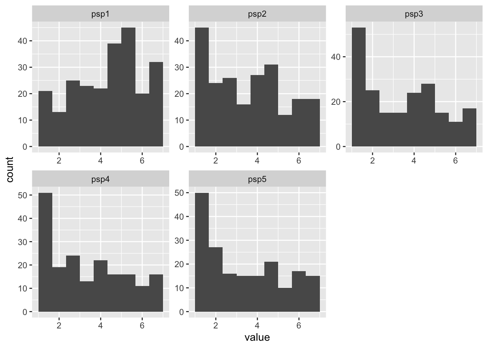
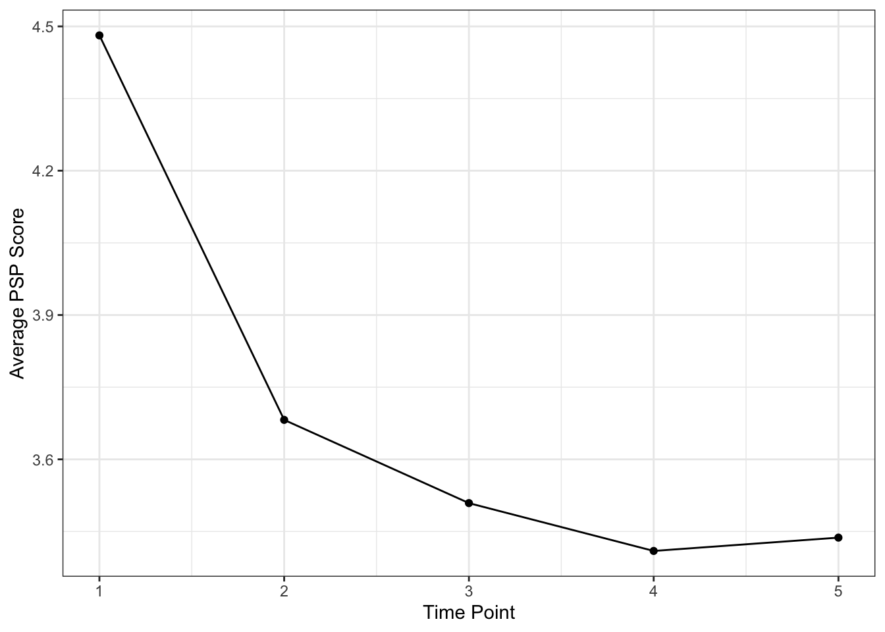
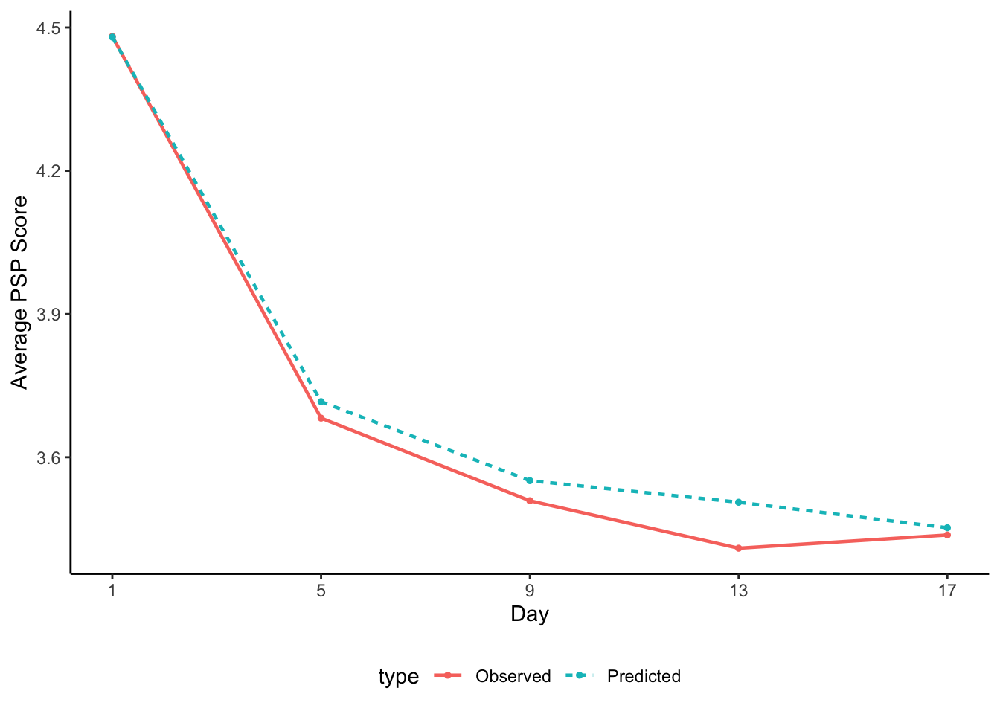
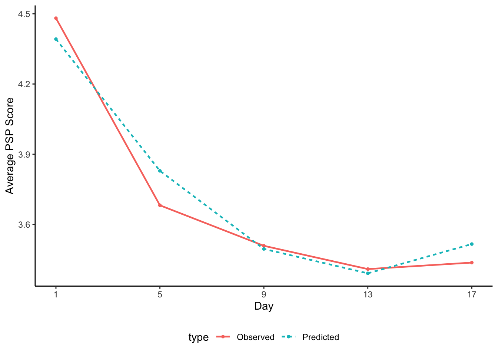

library(lavaan) # used to estimate CFAs and SEMs
library(semTools) # used to compare models
library(ggplot2) # to visualize trajectories
library(dplyr) # data wrangling
library(tidyr) # data wrangling9 Latent Growth Modeling
Note
You can download the R code used in this lab by right-clicking this link and selecting “Save Link As…” in the drop-down menu: latentgrowthmodel.R
9.1 Loading R packages
Load the required packages for this lab into your R environment.
9.2 Loading Data
We’re going to look at a subset of time points from a 21-day daily diary study. Our data contains 4 measurement waves at 4-day intervals for 240 participants (with missing values at later time points). We will focus on two constructs: perfectionistic self-presentation (PSP), which (as operationalized in these data) measures an individual’s desire to hide their imperfections; and 2) state social anxiety (SSA), which measures transitory feelings of anxiety associated with social situations. You can download the data by right-clicking this link and selecting “Save Link As…” in the drop-down menu: data/longitudinal.csv. Make sure to save it in the folder you are using for this class. These data are part of a larger study, and the full data set can be found here: https://osf.io/hwkem/.
We will start by loading the data into our environment:
diary <- rio::import(file = "data/longitudinal.csv")9.3 Visualizing the data
For this example, we will focus on the development of perfectionistic self-presentation (PSP) over time. We will first look at the distribution of this variable at each time point:
diary %>%
select(psp1:psp5) %>%
pivot_longer(everything()) %>%
ggplot(aes(x=value)) +
geom_histogram(bins = 10) +
facet_wrap(vars(name), scales = "free")Warning: Removed 166 rows containing non-finite outside the scale range
(`stat_bin()`).
Question: Do the variables look Normally distributed?
We can also use the functions from the semTools package to explore the distributions further:
# Univariate skew and kurtosis
apply(diary[,2:5], 2, skew) sexm psp1 psp2 psp3
skew (g1) 1.5765565 -0.40015823 0.1261088 0.2233847
se 0.1581139 0.15811388 0.1662822 0.1719205
z 9.9710190 -2.53082285 0.7584025 1.2993491
p 0.0000000 0.01137953 0.4482101 0.1938241apply(diary[,2:5], 2, kurtosis) sexm psp1 psp2 psp3
Excess Kur (g2) 0.4895404 -0.68049195 -1.072857005 -1.1489708600
se 0.3162278 0.31622777 0.332564397 0.3438409530
z 1.5480627 -2.15190450 -3.226012809 -3.3415765338
p 0.1216072 0.03140488 0.001255277 0.0008330405Next, to inform our initial model growth factors, we can visualize the average change over time in our sample using the average scores at each time point.
diary %>% select(id:psp5) %>%
summarize(across(psp1:psp5, ~mean(.x, na.rm = T))) %>%
pivot_longer(cols = psp1:psp5,
names_to = "time", names_prefix = "psp",
names_transform = as.numeric,
values_to = "score") %>%
ggplot(aes(x = time, y = score)) +
geom_point() +
geom_line() +
labs(x = "Time Point", y = "Average PSP Score") +
theme_bw()
Question: What kind of shape does the developmental trajectory look like?
9.4 Basic Latent Growth Models
Specification
We can estimate several latent growth models and compare their fit, starting with a linear growth model, followed by a quadratic growth model, a cubic growth model, and finally a latent basis model. Below is the code to specify each of these three models:
lgm_linear <- '
i =~ 1*psp1 + 1*psp2 + 1*psp3 + 1*psp4 + 1*psp5
s =~ 0*psp1 + 1*psp2 + 2*psp3 + 3*psp4 + 4*psp5
'
lgm_quad <- '
i =~ 1*psp1 + 1*psp2 + 1*psp3 + 1*psp4 + 1*psp5
s =~ 0*psp1 + 1*psp2 + 2*psp3 + 3*psp4 + 4*psp5
q =~ 0*psp1 + 1*psp2 + 4*psp3 + 9*psp4 + 16*psp5
'
lgm_cube <- '
i =~ 1*psp1 + 1*psp2 + 1*psp3 + 1*psp4 + 1*psp5
s =~ 0*psp1 + 1*psp2 + 2*psp3 + 3*psp4 + 4*psp5
q =~ 0*psp1 + 1*psp2 + 4*psp3 + 9*psp4 + 16*psp5
c =~ 0*psp1 + 1*psp2 + 8*psp3 + 27*psp4 + 64*psp5
'
lgm_basis <- '
i =~ 1*psp1 + 1*psp2 + 1*psp3 + 1*psp4 + 1*psp5
s =~ 0*psp1 + psp2 + psp3 + psp4 + 1*psp5
'Note that covariances between intercept and slope(s) are automatically included and don’t need to be explicitly specified.
Question: Should we also include a piecewise growth structure?
Estimation
Next, we can estimate these models using the growth() function. This function tells lavaan that you want to estimate a growth model, which ensures that certain components (e.g., the latent variable mean structure) are automatically included. We will use the mlr estimator to account for non-Normality and fiml to account for missing data.
# Fit the linear LGM using the growth() function
fit_linear <- growth(lgm_linear, data = diary,
estimator = "mlr", missing = "fiml")
# Fit the quadratic LGM using the growth() function
fit_quad <- growth(lgm_quad, data = diary,
estimator = "mlr", missing = "fiml")
# Fit the quadratic LGM using the growth() function
fit_cube <- growth(lgm_cube, data = diary,
estimator = "mlr", missing = "fiml")Warning: lavaan->lav_object_post_check():
covariance matrix of latent variables is not positive definite ; use
lavInspect(fit, "cov.lv") to investigate.# Fit the basis LGM using the growth() function
fit_basis <- growth(lgm_basis, data = diary,
estimator = "mlr", missing = "fiml")Question: Did you encounter any estimation issues?
Compare LGM growth structures
Before we compare the fit of the three models, we need to make sure that all three models are nested. If models are not nested, we can compare them using the BIC and AIC instead. Note that I am ignoring any estimation issues for this section for illustration sake, but you should not do that! Model fit indices based on inadmissible/impossible estimates are not useful.
net(fit_linear, fit_quad, fit_cube, fit_basis)
If cell [R, C] is TRUE, the model in row R is nested within column C.
If the models also have the same degrees of freedom, they are equivalent.
NA indicates the model in column C did not converge when fit to the
implied means and covariance matrix from the model in row R.
The hidden diagonal is TRUE because any model is equivalent to itself.
The upper triangle is hidden because for models with the same degrees
of freedom, cell [C, R] == cell [R, C]. For all models with different
degrees of freedom, the upper diagonal is all FALSE because models with
fewer degrees of freedom (i.e., more parameters) cannot be nested
within models with more degrees of freedom (i.e., fewer parameters).
fit_cube fit_quad fit_basis fit_linear
fit_cube (df = 1)
fit_quad (df = 6) TRUE
fit_basis (df = 7) FALSE FALSE
fit_linear (df = 10) TRUE TRUE TRUE Question: Which models can we compare using a Chi-square difference test? And which models do we need to compare with BIC/AIC?
Comparing Linear to Quadratic
comp_lq <- compareFit(fit_linear, fit_quad)
comp_lq@nested
Scaled Chi-Squared Difference Test (method = "satorra.bentler.2001")
lavaan->unknown():
lavaan NOTE: The "Chisq" column contains standard test statistics, not the
robust test that should be reported per model. A robust difference test is
a function of two standard (not robust) statistics.
Df AIC BIC Chisq Chisq diff Df diff Pr(>Chisq)
fit_quad 6 3529.6 3578.3 17.107
fit_linear 10 3580.5 3615.3 76.048 42.632 4 1.234e-08 ***
---
Signif. codes: 0 '***' 0.001 '**' 0.01 '*' 0.05 '.' 0.1 ' ' 1Comparing Linear to Cubic
comp_lc <- compareFit(fit_linear, fit_cube)
comp_lc@nested
Scaled Chi-Squared Difference Test (method = "satorra.bentler.2001")
lavaan->unknown():
lavaan NOTE: The "Chisq" column contains standard test statistics, not the
robust test that should be reported per model. A robust difference test is
a function of two standard (not robust) statistics.
Df AIC BIC Chisq Chisq diff Df diff Pr(>Chisq)
fit_cube 1 3522.8 3588.9 0.3288
fit_linear 10 3580.5 3615.3 76.0476 63.717 9 2.561e-10 ***
---
Signif. codes: 0 '***' 0.001 '**' 0.01 '*' 0.05 '.' 0.1 ' ' 1Comparing Linear to Basis
comp_lb <- compareFit(fit_linear, fit_basis)
comp_lb@nested
Scaled Chi-Squared Difference Test (method = "satorra.bentler.2001")
lavaan->unknown():
lavaan NOTE: The "Chisq" column contains standard test statistics, not the
robust test that should be reported per model. A robust difference test is
a function of two standard (not robust) statistics.
Df AIC BIC Chisq Chisq diff Df diff Pr(>Chisq)
fit_basis 7 3531.5 3576.8 21.073
fit_linear 10 3580.5 3615.3 76.048 49.804 3 8.794e-11 ***
---
Signif. codes: 0 '***' 0.001 '**' 0.01 '*' 0.05 '.' 0.1 ' ' 1Comparing Quadratic and Cubic to Basis
comp_qcb <- compareFit(fit_quad, fit_cube, fit_basis)
comp_qcb@nested
Scaled Chi-Squared Difference Test (method = "satorra.bentler.2001")
lavaan->unknown():
lavaan NOTE: The "Chisq" column contains standard test statistics, not the
robust test that should be reported per model. A robust difference test is
a function of two standard (not robust) statistics.
Df AIC BIC Chisq Chisq diff Df diff Pr(>Chisq)
fit_cube 1 3522.8 3588.9 0.3288
fit_quad 6 3529.6 3578.3 17.1065 16.2418 5 0.006187 **
fit_basis 7 3531.5 3576.8 21.0731 1.7877 1 0.181209
---
Signif. codes: 0 '***' 0.001 '**' 0.01 '*' 0.05 '.' 0.1 ' ' 1Question: Which of the three models fits best (taking into account estimation issues)?
Evaluating the appropriateness of the latent basis model
Wu and Lang (2016) have shown that the proportionality assumption of the latent basis model (i.e., the percentage of growth attained at each time point is constrained to be equal across all people) can be tenable if, in a quadratic growth model, the linear and quadratic slope variances are non-significant. This would indicate that there is no between-individual variation in the amount of change across time points, in line with the proportionality assumption. All of this rests on the assumption that a quadratic model is the correct model. We can look at the significance of the linear and quadratic variances using the summary function:
summary(fit_quad)lavaan 0.6-19 ended normally after 70 iterations
Estimator ML
Optimization method NLMINB
Number of model parameters 14
Number of observations 240
Number of missing patterns 15
Model Test User Model:
Standard Scaled
Test Statistic 17.107 16.433
Degrees of freedom 6 6
P-value (Chi-square) 0.009 0.012
Scaling correction factor 1.041
Yuan-Bentler correction (Mplus variant)
Parameter Estimates:
Standard errors Sandwich
Information bread Observed
Observed information based on Hessian
Latent Variables:
Estimate Std.Err z-value P(>|z|)
i =~
psp1 1.000
psp2 1.000
psp3 1.000
psp4 1.000
psp5 1.000
s =~
psp1 0.000
psp2 1.000
psp3 2.000
psp4 3.000
psp5 4.000
q =~
psp1 0.000
psp2 1.000
psp3 4.000
psp4 9.000
psp5 16.000
Covariances:
Estimate Std.Err z-value P(>|z|)
i ~~
s 0.395 0.225 1.757 0.079
q -0.088 0.048 -1.841 0.066
s ~~
q -0.042 0.040 -1.037 0.300
Intercepts:
Estimate Std.Err z-value P(>|z|)
i 4.392 0.110 39.989 0.000
s -0.677 0.080 -8.467 0.000
q 0.115 0.018 6.253 0.000
Variances:
Estimate Std.Err z-value P(>|z|)
.psp1 1.288 0.280 4.597 0.000
.psp2 0.766 0.125 6.151 0.000
.psp3 0.742 0.164 4.535 0.000
.psp4 0.922 0.267 3.450 0.001
.psp5 0.172 0.351 0.490 0.624
i 1.669 0.297 5.615 0.000
s 0.209 0.202 1.037 0.300
q 0.014 0.010 1.401 0.161Question: Is it OK to move forward with the latent basis model?
Model Fit Evaluation
Focusing on the best-fitting model according to our comparisons above, the latent basis model, we will now examine global and local fit.
summary(fit_basis, fit.measures = T, estimates = F)lavaan 0.6-19 ended normally after 44 iterations
Estimator ML
Optimization method NLMINB
Number of model parameters 13
Number of observations 240
Number of missing patterns 15
Model Test User Model:
Standard Scaled
Test Statistic 21.073 17.426
Degrees of freedom 7 7
P-value (Chi-square) 0.004 0.015
Scaling correction factor 1.209
Yuan-Bentler correction (Mplus variant)
Model Test Baseline Model:
Test statistic 730.786 346.167
Degrees of freedom 10 10
P-value 0.000 0.000
Scaling correction factor 2.111
User Model versus Baseline Model:
Comparative Fit Index (CFI) 0.980 0.969
Tucker-Lewis Index (TLI) 0.972 0.956
Robust Comparative Fit Index (CFI) 0.982
Robust Tucker-Lewis Index (TLI) 0.974
Loglikelihood and Information Criteria:
Loglikelihood user model (H0) -1752.772 -1752.772
Scaling correction factor 1.541
for the MLR correction
Loglikelihood unrestricted model (H1) -1742.236 -1742.236
Scaling correction factor 1.425
for the MLR correction
Akaike (AIC) 3531.545 3531.545
Bayesian (BIC) 3576.793 3576.793
Sample-size adjusted Bayesian (SABIC) 3535.586 3535.586
Root Mean Square Error of Approximation:
RMSEA 0.092 0.079
90 Percent confidence interval - lower 0.048 0.037
90 Percent confidence interval - upper 0.138 0.122
P-value H_0: RMSEA <= 0.050 0.056 0.115
P-value H_0: RMSEA >= 0.080 0.704 0.526
Robust RMSEA 0.099
90 Percent confidence interval - lower 0.037
90 Percent confidence interval - upper 0.162
P-value H_0: Robust RMSEA <= 0.050 0.084
P-value H_0: Robust RMSEA >= 0.080 0.741
Standardized Root Mean Square Residual:
SRMR 0.022 0.022Question: Does global fit look good? Or bad?
residuals(fit_basis, type = "cor.bollen")$type
[1] "cor.bollen"
$cov
psp1 psp2 psp3 psp4 psp5
psp1 0.000
psp2 0.001 0.000
psp3 0.008 0.046 0.000
psp4 0.004 -0.015 -0.025 0.000
psp5 -0.012 -0.049 -0.009 0.038 0.000
$mean
psp1 psp2 psp3 psp4 psp5
0.001 -0.010 -0.012 0.003 0.023 Question: Does local fit look good? Or bad?
Parameter Estimate Interpretation
Next, we can look at the parameter estimates and interpret them to see what they tell us about the development of PSP over the course of 16 days.
summary(fit_basis, std = T, rsquare = T)lavaan 0.6-19 ended normally after 44 iterations
Estimator ML
Optimization method NLMINB
Number of model parameters 13
Number of observations 240
Number of missing patterns 15
Model Test User Model:
Standard Scaled
Test Statistic 21.073 17.426
Degrees of freedom 7 7
P-value (Chi-square) 0.004 0.015
Scaling correction factor 1.209
Yuan-Bentler correction (Mplus variant)
Parameter Estimates:
Standard errors Sandwich
Information bread Observed
Observed information based on Hessian
Latent Variables:
Estimate Std.Err z-value P(>|z|) Std.lv Std.all
i =~
psp1 1.000 1.620 0.966
psp2 1.000 1.620 0.869
psp3 1.000 1.620 0.852
psp4 1.000 1.620 0.836
psp5 1.000 1.620 0.825
s =~
psp1 0.000 0.000 0.000
psp2 0.743 0.085 8.720 0.000 1.058 0.567
psp3 0.904 0.071 12.684 0.000 1.287 0.677
psp4 0.948 0.047 20.162 0.000 1.349 0.696
psp5 1.000 1.423 0.725
Covariances:
Estimate Std.Err z-value P(>|z|) Std.lv Std.all
i ~~
s -0.810 0.499 -1.622 0.105 -0.351 -0.351
Intercepts:
Estimate Std.Err z-value P(>|z|) Std.lv Std.all
i 4.480 0.108 41.452 0.000 2.766 2.766
s -1.028 0.112 -9.168 0.000 -0.722 -0.722
Variances:
Estimate Std.Err z-value P(>|z|) Std.lv Std.all
.psp1 0.188 0.446 0.422 0.673 0.188 0.067
.psp2 0.938 0.141 6.633 0.000 0.938 0.270
.psp3 0.802 0.188 4.258 0.000 0.802 0.222
.psp4 0.848 0.262 3.239 0.001 0.848 0.226
.psp5 0.826 0.207 3.998 0.000 0.826 0.214
i 2.623 0.494 5.312 0.000 1.000 1.000
s 2.025 0.519 3.899 0.000 1.000 1.000
R-Square:
Estimate
psp1 0.933
psp2 0.730
psp3 0.778
psp4 0.774
psp5 0.786(See example write-up below for details.)
Comparing the observed to estimated trajectory
We can visualize the model-implied, or predicted, trajectory and compare it to the observed trajectory, to get a better idea of how closely the estimated trajectory matches onto the observed trajectory.
# Get observed growth curve
obs_curve <- diary %>% select(id:psp5) %>%
summarize(across(psp1:psp5, ~mean(.x, na.rm = T))) %>%
pivot_longer(cols = psp1:psp5,
names_to = "time", names_prefix = "psp",
names_transform = as.numeric)
# Get predicted growth curve
pred_curve <- lavPredict(fit_basis) %>% as.data.frame() %>%
rowwise() %>%
mutate(t1 = i + 0*s,
t2 = i + .743*s,
t3 = i + .904*s,
t4 = i + .948*s,
t5 = i + 1*s) %>%
pivot_longer(cols = t1:t5,
names_to = "time", names_prefix = "t",
names_transform = as.numeric) %>%
group_by(time) %>%
summarize(value = mean(value)) %>%
select(time, value)
# Create the plot:
bind_rows(obs_curve, pred_curve, .id = "type") %>%
mutate(type = ifelse(type == "1", "Observed", "Predicted")) %>%
ggplot(aes(x = time, group = type, color = type, linetype = type)) +
geom_line(aes(y = value),
linewidth = .8) +
geom_point(aes(y = value),
size = 1) +
labs(y = "Average PSP Score") +
scale_x_continuous("Day", breaks = c(1, 2, 3, 4,5),
labels = c(1,5,9,13,17)) +
theme_classic() +
theme(legend.position = "bottom")
We can compare this figure to one based on the quadratic growth model estimates to understand how each model differs in the predictions they make about the trajectory of change in perfectionistic self-presentation.
# Get predicted growth curve
pred_curve2 <- lavPredict(fit_quad) %>% as.data.frame() %>%
rowwise() %>%
mutate(t1 = i + 0*s + 0*q,
t2 = i + 1*s + 1*q,
t3 = i + 2*s + 4*q,
t4 = i + 3*s + 9*q,
t5 = i + 4*s + 16*q) %>%
pivot_longer(cols = t1:t5,
names_to = "time", names_prefix = "t",
names_transform = as.numeric) %>%
group_by(time) %>%
summarize(value = mean(value)) %>%
select(time, value)
# Create the plot:
bind_rows(obs_curve, pred_curve2, .id = "type") %>%
mutate(type = ifelse(type == "1", "Observed", "Predicted")) %>%
ggplot(aes(x = time, group = type, color = type, linetype = type)) +
geom_line(aes(y = value),
linewidth = .8) +
geom_point(aes(y = value),
size = 1) +
labs(y = "Average PSP Score") +
scale_x_continuous("Day", breaks = c(1, 2, 3, 4,5),
labels = c(1,5,9,13,17)) +
theme_classic() +
theme(legend.position = "bottom")
Question: What are the main differences between the predicted trajectories?
9.5 Extending the LGM with covariates
Below we will go over three options for extending the basic LGM. In a typical study, you would have already determined which of these aligns with your hypotheses. However, since this is a lab, I want to show you all the options.
Including a Time-Invariant Covariate: Sex
We can include the participant’s self-reported sex (0 = female, 1 = male) as a time-invariant covariate and see if it can explain individual differences in the initial level of or change in PSP.
lgm_ti_cov <- '
i =~ 1*psp1 + 1*psp2 + 1*psp3 + 1*psp4 + 1*psp5
s =~ 0*psp1 + psp2 + psp3 + psp4 + 1*psp5
i ~ sexm
s ~ sexm
'
fit_ti_cov <- growth(lgm_ti_cov, data = diary,
estimator = "mlr", missing = "fiml")
summary(fit_ti_cov, fit.measures = T, rsquare = T, std = T)lavaan 0.6-19 ended normally after 52 iterations
Estimator ML
Optimization method NLMINB
Number of model parameters 15
Number of observations 240
Number of missing patterns 15
Model Test User Model:
Standard Scaled
Test Statistic 26.729 24.671
Degrees of freedom 10 10
P-value (Chi-square) 0.003 0.006
Scaling correction factor 1.083
Yuan-Bentler correction (Mplus variant)
Model Test Baseline Model:
Test statistic 738.606 438.423
Degrees of freedom 15 15
P-value 0.000 0.000
Scaling correction factor 1.685
User Model versus Baseline Model:
Comparative Fit Index (CFI) 0.977 0.965
Tucker-Lewis Index (TLI) 0.965 0.948
Robust Comparative Fit Index (CFI) 0.977
Robust Tucker-Lewis Index (TLI) 0.966
Loglikelihood and Information Criteria:
Loglikelihood user model (H0) -1751.690 -1751.690
Scaling correction factor 1.455
for the MLR correction
Loglikelihood unrestricted model (H1) -1738.326 -1738.326
Scaling correction factor 1.306
for the MLR correction
Akaike (AIC) 3533.381 3533.381
Bayesian (BIC) 3585.590 3585.590
Sample-size adjusted Bayesian (SABIC) 3538.044 3538.044
Root Mean Square Error of Approximation:
RMSEA 0.083 0.078
90 Percent confidence interval - lower 0.046 0.041
90 Percent confidence interval - upper 0.123 0.116
P-value H_0: RMSEA <= 0.050 0.068 0.097
P-value H_0: RMSEA >= 0.080 0.599 0.508
Robust RMSEA 0.093
90 Percent confidence interval - lower 0.045
90 Percent confidence interval - upper 0.142
P-value H_0: Robust RMSEA <= 0.050 0.068
P-value H_0: Robust RMSEA >= 0.080 0.707
Standardized Root Mean Square Residual:
SRMR 0.025 0.025
Parameter Estimates:
Standard errors Sandwich
Information bread Observed
Observed information based on Hessian
Latent Variables:
Estimate Std.Err z-value P(>|z|) Std.lv Std.all
i =~
psp1 1.000 1.620 0.966
psp2 1.000 1.620 0.869
psp3 1.000 1.620 0.852
psp4 1.000 1.620 0.837
psp5 1.000 1.620 0.826
s =~
psp1 0.000 0.000 0.000
psp2 0.743 0.085 8.686 0.000 1.058 0.568
psp3 0.902 0.071 12.627 0.000 1.286 0.676
psp4 0.948 0.047 20.181 0.000 1.352 0.698
psp5 1.000 1.425 0.726
Regressions:
Estimate Std.Err z-value P(>|z|) Std.lv Std.all
i ~
sexm -0.319 0.260 -1.227 0.220 -0.197 -0.077
s ~
sexm -0.114 0.264 -0.434 0.664 -0.080 -0.032
Covariances:
Estimate Std.Err z-value P(>|z|) Std.lv Std.all
.i ~~
.s -0.819 0.494 -1.658 0.097 -0.356 -0.356
Intercepts:
Estimate Std.Err z-value P(>|z|) Std.lv Std.all
.i 4.541 0.122 37.270 0.000 2.802 2.802
.s -1.008 0.123 -8.182 0.000 -0.707 -0.707
Variances:
Estimate Std.Err z-value P(>|z|) Std.lv Std.all
.psp1 0.186 0.442 0.420 0.674 0.186 0.066
.psp2 0.940 0.141 6.653 0.000 0.940 0.270
.psp3 0.810 0.190 4.255 0.000 0.810 0.224
.psp4 0.840 0.261 3.215 0.001 0.840 0.224
.psp5 0.824 0.206 4.005 0.000 0.824 0.214
.i 2.610 0.491 5.320 0.000 0.994 0.994
.s 2.029 0.516 3.930 0.000 0.999 0.999
R-Square:
Estimate
psp1 0.934
psp2 0.730
psp3 0.776
psp4 0.776
psp5 0.786
i 0.006
s 0.001Question: What do you conclude about the effect of a person’s sex on their PSP trajectory?
9.6 Example Write-Up
Based on the observed mean trajectory, we estimated four different growth structures, (1) linear, (2) quadratic, (3) cubic, and (4) latent basis. The cubic model resulted in inadmissible estimates (negative variances), likely due to the complexity of the model. Thus, we did not include this model in subsequent comparisons. The linear model fit significantly worse than both the quadratic (\(\Delta\chi^2(4) = 42.63, p < .001\)) and latent basis (\(\Delta\chi^2(2) = 49.80, p < .001\)) models. As the quadratic and latent basis models are not nested, we used the AIC and BIC to compare the relative fit of these two models. The AIC preferred the quadratic model ((\(\Delta AIC = -1.97\)) whereas the BIC preferred the latent basis model (\(\Delta BIC = -1.51\)). We placed more weight on the BIC as it has a stronger penalty against overly complex models. This decision was further supported by confirming that the linear and quadratic slope variance of the quadratic model were both non-significant, indicating that there are no significant between-person differences in change in PSP over time, supporting the proportionality assumption of the latent basis model. Thus, we selected the latent basis model for further analyses.
The latent basis model fit the data well, \(\chi^2(7) = 17.43, p = .015, CFI = .982, RMSEA = .099, 90\% CI [.037, .112], SRMR = .022\). None of the correlation residuals were greater than \(|0.10|\), indicating good local fit. The mean intercept was 4.80 (SE = 0.11), and there was significant between-person variation around the mean intercept (\(\psi_{11} = 2.62, SE = 0.549, p = .001\)), indicating that initial levels of PSP varied across participants. The mean slope was -1.03 (\(SE = 0.11, p < .001\)), indicating that between the first and last diary entry, participants levels of PSP declined, on average, by about 1 point. There was significant between-person variation in the slope (\(\psi_{22} = 2.03, SE = 0.52, p < .001\)). This suggests that, although the proportionality assumption was met, the total change between the first and final time point did vary across participants. Based on the model implied slope loadings, about 74% (\(\lambda_{22} = 0.74\)) of that decrease occurred during the first four days. The proportion of decrease then declined between day 5 and 9 (16%), between day 9 and 13 (4%), and stabilized between day 13 and 17 (5%). The covariance between the intercept and slope was not significant (\(\psi_{21} = 0.81, SE = 0.50, p = .105, r = -.351\)), indicating that the initial level of PSP was not significantly associated with subsequent changes in PSP. R-squared values indicate that between 63-93% of the variance in the observed PSP scores could be explained by the growth factors.
To evaluate the potential effect of sex on the initial level and changes in PSP, we included participant self-reported sex as a time-invariant covariate. The model fit the data well (\(\chi^2(10) = 24.67, p = .006, CFI = .965, RMSEA = .078, 90\% CI [.041, .116], SRMR = .025\)). None of the correlation residuals were greater than \(|0.10|\), indicating good local fit. Sex was not a significant predictor of the initial level of PSP (\(B = -0.32, SE = 0.26, p = .220, \beta = -.08\)) or subsequent change in PSP (\(B = -0.11, SE = 0.26, p = .664, \beta = -.03\)). These findings indicate that those identifying as male do not differ from those identifying as female in their initial level of or subsequent changes in PSP during this 17-day study period. A full overview of all parameter estimates can be found in (fictional) Table XX.
9.7 Summary
In this R lab, you were introduced to the steps involved in specifying, estimating, evaluating, comparing and interpreting the results of latent growth models. In addition, you have seen some ways in which you can expand the basic growth model to include additional predictors or outcomes. Below, you’ll find three Bonus sections that demonstrate how to test the equivalence of residual variances in a growth model, how to include residual covariances, and how to set-up and estimate a parallel growth model. In the next R Lab, you will learn all about measurement invariance testing with ordinal indicators.
9.8 Bonus 1: Residual Variance Structure
Focusing once again on a single growth model, we can test if the residual variances can be fixed to be equal across the four time points, by giving all residuals the same label (a). Doing this simplifies the model (instead of estimating 5 residual variances, we estimate 1 residual variance), and simple models (if they fit equally well) should be preferred.
lgm_basis_eq <- '
i =~ 1*psp1 + 1*psp2 + 1*psp3 + 1*psp4 + 1*psp5
s =~ 0*psp1 + psp2 + psp3 + psp4 + 1*psp5
psp1 ~~ a*psp1
psp2 ~~ a*psp2
psp3 ~~ a*psp3
psp4 ~~ a*psp4
psp5 ~~ a*psp5
'
fit_basis_eq <- growth(lgm_basis_eq, data = diary,
estimator = "mlr", missing = "fiml")
comp_bbeq <- compareFit(fit_basis, fit_basis_eq)
comp_bbeq@nested
Scaled Chi-Squared Difference Test (method = "satorra.bentler.2001")
lavaan->unknown():
lavaan NOTE: The "Chisq" column contains standard test statistics, not the
robust test that should be reported per model. A robust difference test is
a function of two standard (not robust) statistics.
Df AIC BIC Chisq Chisq diff Df diff Pr(>Chisq)
fit_basis 7 3531.5 3576.8 21.073
fit_basis_eq 11 3526.5 3557.8 24.029 1.4454 4 0.8363Question: Does the Chi-square difference test support the hypothesis of equal residual variances?
9.9 Bonus 2: Including a Residual Covariance Structure
Related, we can test if the residual covariances should be included in the model to account for any remaining associations between time points with different lags (after accounting for the main growth model). In the model below, covariances are structured such that those that have the same lag (e.g., adjacent time point) covary equivalently (by giving them a shared label). In addition, as the lag increases, we use a non-linear constraint to force the covariances to decrease (as more time passes, scores have less to do with each other).
lgm_basis_eqc <- '
i =~ 1*psp1 + 1*psp2 + 1*psp3 + 1*psp4 + 1*psp5
s =~ 0*psp1 + psp2 + psp3 + psp4 + 1*psp5
psp1 ~~ a*psp1
psp2 ~~ a*psp2
psp3 ~~ a*psp3
psp4 ~~ a*psp4
psp5 ~~ a*psp5
# lag-1 residual covariances
psp1 ~~ b*psp2
psp2 ~~ b*psp3
psp3 ~~ b*psp4
psp4 ~~ b*psp5
# lag-2 residual covariances
psp1 ~~ c*psp3
psp2 ~~ c*psp4
psp3 ~~ c*psp5
# lag-3 residual covariances
psp1 ~~ d*psp4
psp2 ~~ d*psp5
# lag-4 residual covariances
psp1 ~~ e*psp5
# constraints to apply the reducing residual covariance over time assumption
c == b^2
d == b^3
e == b^4
'
fit_basis_eqc <- growth(lgm_basis_eqc, data = diary,
estimator = "mlr", missing = "fiml")
comp_eqc <- compareFit(fit_basis_eq, fit_basis_eqc)
comp_eqc@nested
Scaled Chi-Squared Difference Test (method = "satorra.bentler.2001")
lavaan->unknown():
lavaan NOTE: The "Chisq" column contains standard test statistics, not the
robust test that should be reported per model. A robust difference test is
a function of two standard (not robust) statistics.
Df AIC BIC Chisq Chisq diff Df diff Pr(>Chisq)
fit_basis_eqc 10 3518.7 3553.5 14.226
fit_basis_eq 11 3526.5 3557.8 24.029 5.7598 1 0.0164 *
---
Signif. codes: 0 '***' 0.001 '**' 0.01 '*' 0.05 '.' 0.1 ' ' 1Question: Does the Chi-square difference test support the hypothesis of including a residual covariance structure?
(Remember, the model with residual covariance structure is more complex than the model with just the residual variance structure, so we’re testing if making the model more complex is worth it or not.)
summary(fit_basis_eqc, std = T)lavaan 0.6-19 ended normally after 290 iterations
Estimator ML
Optimization method NLMINB
Number of model parameters 23
Number of observations 240
Number of missing patterns 15
Model Test User Model:
Standard Scaled
Test Statistic 14.226 9.520
Degrees of freedom 10 10
P-value (Chi-square) 0.163 0.484
Scaling correction factor 1.494
Yuan-Bentler correction (Mplus variant)
Parameter Estimates:
Standard errors Sandwich
Information bread Observed
Observed information based on Hessian
Latent Variables:
Estimate Std.Err z-value P(>|z|) Std.lv Std.all
i =~
psp1 1.000 1.352 0.806
psp2 1.000 1.352 0.730
psp3 1.000 1.352 0.704
psp4 1.000 1.352 0.699
psp5 1.000 1.352 0.689
s =~
psp1 0.000 0.000 0.000
psp2 0.768 0.075 10.276 0.000 0.781 0.422
psp3 0.916 0.063 14.573 0.000 0.932 0.486
psp4 0.946 0.058 16.423 0.000 0.963 0.498
psp5 1.000 1.018 0.519
Covariances:
Estimate Std.Err z-value P(>|z|) Std.lv Std.all
.psp1 ~~
.psp2 (b) 0.201 0.110 1.819 0.069 0.201 0.203
.psp2 ~~
.psp3 (b) 0.201 0.110 1.819 0.069 0.201 0.203
.psp3 ~~
.psp4 (b) 0.201 0.110 1.819 0.069 0.201 0.203
.psp4 ~~
.psp5 (b) 0.201 0.110 1.819 0.069 0.201 0.203
.psp1 ~~
.psp3 (c) 0.040 0.044 0.910 0.363 0.040 0.041
.psp2 ~~
.psp4 (c) 0.040 0.044 0.910 0.363 0.040 0.041
.psp3 ~~
.psp5 (c) 0.040 0.044 0.910 0.363 0.040 0.041
.psp1 ~~
.psp4 (d) 0.008 0.013 0.606 0.544 0.008 0.008
.psp2 ~~
.psp5 (d) 0.008 0.013 0.606 0.544 0.008 0.008
.psp1 ~~
.psp5 (e) 0.002 0.004 0.455 0.649 0.002 0.002
i ~~
s -0.001 0.186 -0.004 0.997 -0.001 -0.001
Intercepts:
Estimate Std.Err z-value P(>|z|) Std.lv Std.all
i 4.480 0.108 41.335 0.000 3.313 3.313
s -1.014 0.110 -9.237 0.000 -0.996 -0.996
Variances:
Estimate Std.Err z-value P(>|z|) Std.lv Std.all
.psp1 (a) 0.989 0.154 6.427 0.000 0.989 0.351
.psp2 (a) 0.989 0.154 6.427 0.000 0.989 0.289
.psp3 (a) 0.989 0.154 6.427 0.000 0.989 0.268
.psp4 (a) 0.989 0.154 6.427 0.000 0.989 0.264
.psp5 (a) 0.989 0.154 6.427 0.000 0.989 0.257
i 1.828 0.242 7.553 0.000 1.000 1.000
s 1.036 0.336 3.081 0.002 1.000 1.000
Constraints:
|Slack|
c - (b^2) 0.000
d - (b^3) 0.000
e - (b^4) 0.0009.10 Bonus 3: Parallel Growth Models
When you collect data about multiple constructs across a period of time, you can also model the association between the two constructs using a parallel growth model. In this type of model, each construct gets its own growth model, and the intercept of one is used to predict the slope of the other model. This helps you answer the research question: Do initial levels of X predict subsequent changes in Y? We can try this out with PSP and SSA. We already know the optimal growth structure for PSP, but we still need to evaluate this question for SSA.
lgm_linear2 <- '
i =~ 1*ssa1 + 1*ssa2 + 1*ssa3 + 1*ssa4 + 1*ssa5
s =~ 0*ssa1 + 1*ssa2 + 2*ssa3 + 3*ssa4 + 4*ssa5
'
lgm_quad2 <- '
i =~ 1*ssa1 + 1*ssa2 + 1*ssa3 + 1*ssa4 + 1*ssa5
s =~ 0*ssa1 + 1*ssa2 + 2*ssa3 + 3*ssa4 + 4*ssa5
q =~ 0*ssa1 + 1*ssa2 + 4*ssa3 + 9*ssa4 + 16*ssa5
'
lgm_cube2 <- '
i =~ 1*ssa1 + 1*ssa2 + 1*ssa3 + 1*ssa4 + 1*ssa5
s =~ 0*ssa1 + 1*ssa2 + 2*ssa3 + 3*ssa4 + 4*ssa5
q =~ 0*ssa1 + 1*ssa2 + 4*ssa3 + 9*ssa4 + 16*ssa5
c =~ 0*ssa1 + 1*ssa2 + 8*ssa3 + 27*ssa4 + 64*ssa5
'
lgm_basis2 <- '
i =~ 1*ssa1 + 1*ssa2 + 1*ssa3 + 1*ssa4 + 1*ssa5
s =~ 0*ssa1 + ssa2 + ssa3 + ssa4 + 1*ssa5
'
# Fit the linear LGM using the growth() function
fit_linear2 <- growth(lgm_linear2, data = diary,
estimator = "mlr", missing = "fiml")
# Fit the quadratic LGM using the growth() function
fit_quad2 <- growth(lgm_quad2, data = diary,
estimator = "mlr", missing = "fiml")Warning: lavaan->lav_object_post_check():
covariance matrix of latent variables is not positive definite ; use
lavInspect(fit, "cov.lv") to investigate.# Fit the quadratic LGM using the growth() function
fit_cube2 <- growth(lgm_cube2, data = diary,
estimator = "mlr", missing = "fiml")Warning: lavaan->lav_object_post_check():
covariance matrix of latent variables is not positive definite ; use
lavInspect(fit, "cov.lv") to investigate.# Fit the basis LGM using the growth() function
fit_basis2 <- growth(lgm_basis2, data = diary,
estimator = "mlr", missing = "fiml")
comp2_lq <- compareFit(fit_linear2, fit_quad2)
comp2_lq@nested
Scaled Chi-Squared Difference Test (method = "satorra.bentler.2001")
lavaan->unknown():
lavaan NOTE: The "Chisq" column contains standard test statistics, not the
robust test that should be reported per model. A robust difference test is
a function of two standard (not robust) statistics.
Df AIC BIC Chisq Chisq diff Df diff Pr(>Chisq)
fit_quad2 6 2505.8 2554.5 8.9613
fit_linear2 10 2513.8 2548.6 25.0069 14.339 4 0.006287 **
---
Signif. codes: 0 '***' 0.001 '**' 0.01 '*' 0.05 '.' 0.1 ' ' 1comp2_lc <- compareFit(fit_linear2, fit_cube2)
comp2_lc@nested
Scaled Chi-Squared Difference Test (method = "satorra.bentler.2001")
lavaan->unknown():
lavaan NOTE: The "Chisq" column contains standard test statistics, not the
robust test that should be reported per model. A robust difference test is
a function of two standard (not robust) statistics.
Df AIC BIC Chisq Chisq diff Df diff Pr(>Chisq)
fit_cube2 1 2508.3 2574.5 1.5359
fit_linear2 10 2513.8 2548.6 25.0069 22.184 9 0.008313 **
---
Signif. codes: 0 '***' 0.001 '**' 0.01 '*' 0.05 '.' 0.1 ' ' 1comp2_lb <- compareFit(fit_linear2, fit_basis2)
comp2_lb@nested
Scaled Chi-Squared Difference Test (method = "satorra.bentler.2001")
lavaan->unknown():
lavaan NOTE: The "Chisq" column contains standard test statistics, not the
robust test that should be reported per model. A robust difference test is
a function of two standard (not robust) statistics.
Df AIC BIC Chisq Chisq diff Df diff Pr(>Chisq)
fit_basis2 7 2504.4 2549.7 9.664
fit_linear2 10 2513.8 2548.6 25.007 15.133 3 0.001706 **
---
Signif. codes: 0 '***' 0.001 '**' 0.01 '*' 0.05 '.' 0.1 ' ' 1comp2_qc <- compareFit(fit_quad2, fit_cube2)
comp2_qc@nested
Scaled Chi-Squared Difference Test (method = "satorra.bentler.2001")
lavaan->unknown():
lavaan NOTE: The "Chisq" column contains standard test statistics, not the
robust test that should be reported per model. A robust difference test is
a function of two standard (not robust) statistics.
Df AIC BIC Chisq Chisq diff Df diff Pr(>Chisq)
fit_cube2 1 2508.3 2574.5 1.5359
fit_quad2 6 2505.8 2554.5 8.9613 7.3576 5 0.1954comp2_qcb <- compareFit(fit_quad2, fit_cube2, fit_basis2)
comp2_qcb@nested
Scaled Chi-Squared Difference Test (method = "satorra.bentler.2001")
lavaan->unknown():
lavaan NOTE: The "Chisq" column contains standard test statistics, not the
robust test that should be reported per model. A robust difference test is
a function of two standard (not robust) statistics.
Df AIC BIC Chisq Chisq diff Df diff Pr(>Chisq)
fit_cube2 1 2508.3 2574.5 1.5359
fit_quad2 6 2505.8 2554.5 8.9613 7.3576 5 0.1954
fit_basis2 7 2504.4 2549.7 9.6640 0.4899 1 0.4840# Look at variances of linear and quadratic slope in quad model to check proportionality assumption
parameterEstimates(fit_quad2) %>% filter((lhs == "s" | lhs == "q") & op == "~~") lhs op rhs est se z pvalue ci.lower ci.upper
1 s ~~ s 0.026 0.090 0.286 0.775 -0.150 0.202
2 q ~~ q 0.004 0.005 0.753 0.451 -0.006 0.013
3 s ~~ q -0.009 0.019 -0.444 0.657 -0.046 0.029Based on the analyses and comparisons above, I select the latent basis model, as it fit the data best (based on AIC and BIC), did not have computational issues (which the quadratic and cubic model did have), and the proportionality assumption is met.
Next, we can specify and estimate the parallel growth model with both constructs. Make sure you give each construct’s intercept and slope a different name! Note that I include the code and output here for illustrative purposes. This model is likely to complex to estimate with this relatively small sample, which is resulting is impossible covariance/correlation estimates (see summary output below).
lgm_parallel <- '
issa =~ 1*ssa1 + 1*ssa2 + 1*ssa3 + 1*ssa4 + 1*ssa5
sssa =~ 0*ssa1 + ssa2 + ssa3 + ssa4 + 1*ssa5
ipsp =~ 1*psp1 + 1*psp2 + 1*psp3 + 1*psp4 + 1*psp5
spsp =~ 0*psp1 + psp2 + psp3 + psp4 + 1*psp5
# covariances between pairs of intercept and slope
issa ~~ ipsp
sssa ~~ spsp
# regression paths
sssa ~ ipsp
spsp ~ issa
'
# Fit the basis LGM using the growth() function
fit_parallel <- growth(lgm_parallel, data = diary,
estimator = "mlr", missing = "fiml")Warning: lavaan->lav_object_post_check():
covariance matrix of latent variables is not positive definite ; use
lavInspect(fit, "cov.lv") to investigate.summary(fit_parallel, fit.measures = T, std = T, rsquare = T)lavaan 0.6-19 ended normally after 60 iterations
Estimator ML
Optimization method NLMINB
Number of model parameters 28
Number of observations 240
Number of missing patterns 15
Model Test User Model:
Standard Scaled
Test Statistic 172.804 174.997
Degrees of freedom 37 37
P-value (Chi-square) 0.000 0.000
Scaling correction factor 0.987
Yuan-Bentler correction (Mplus variant)
Model Test Baseline Model:
Test statistic 1719.080 1185.277
Degrees of freedom 45 45
P-value 0.000 0.000
Scaling correction factor 1.450
User Model versus Baseline Model:
Comparative Fit Index (CFI) 0.919 0.879
Tucker-Lewis Index (TLI) 0.901 0.853
Robust Comparative Fit Index (CFI) 0.920
Robust Tucker-Lewis Index (TLI) 0.902
Loglikelihood and Information Criteria:
Loglikelihood user model (H0) -2857.531 -2857.531
Scaling correction factor 1.579
for the MLR correction
Loglikelihood unrestricted model (H1) -2771.129 -2771.129
Scaling correction factor 1.242
for the MLR correction
Akaike (AIC) 5771.062 5771.062
Bayesian (BIC) 5868.520 5868.520
Sample-size adjusted Bayesian (SABIC) 5779.767 5779.767
Root Mean Square Error of Approximation:
RMSEA 0.124 0.125
90 Percent confidence interval - lower 0.105 0.106
90 Percent confidence interval - upper 0.143 0.144
P-value H_0: RMSEA <= 0.050 0.000 0.000
P-value H_0: RMSEA >= 0.080 1.000 1.000
Robust RMSEA 0.136
90 Percent confidence interval - lower 0.113
90 Percent confidence interval - upper 0.160
P-value H_0: Robust RMSEA <= 0.050 0.000
P-value H_0: Robust RMSEA >= 0.080 1.000
Standardized Root Mean Square Residual:
SRMR 0.041 0.041
Parameter Estimates:
Standard errors Sandwich
Information bread Observed
Observed information based on Hessian
Latent Variables:
Estimate Std.Err z-value P(>|z|) Std.lv Std.all
issa =~
ssa1 1.000 0.851 0.847
ssa2 1.000 0.851 0.813
ssa3 1.000 0.851 0.798
ssa4 1.000 0.851 0.810
ssa5 1.000 0.851 0.766
sssa =~
ssa1 0.000 0.000 0.000
ssa2 0.672 0.174 3.863 0.000 0.420 0.402
ssa3 0.784 0.156 5.014 0.000 0.490 0.460
ssa4 0.864 0.102 8.510 0.000 0.540 0.514
ssa5 1.000 0.625 0.563
ipsp =~
psp1 1.000 1.383 0.818
psp2 1.000 1.383 0.750
psp3 1.000 1.383 0.728
psp4 1.000 1.383 0.706
psp5 1.000 1.383 0.695
spsp =~
psp1 0.000 0.000 0.000
psp2 0.653 0.113 5.802 0.000 0.721 0.391
psp3 0.827 0.110 7.493 0.000 0.913 0.480
psp4 0.888 0.066 13.414 0.000 0.980 0.501
psp5 1.000 1.104 0.555
Regressions:
Estimate Std.Err z-value P(>|z|) Std.lv Std.all
sssa ~
ipsp -0.126 0.060 -2.109 0.035 -0.280 -0.280
spsp ~
issa 0.037 0.171 0.215 0.830 0.028 0.028
Covariances:
Estimate Std.Err z-value P(>|z|) Std.lv Std.all
issa ~~
ipsp 1.012 0.121 8.366 0.000 0.859 0.859
.sssa ~~
.spsp 0.678 0.171 3.970 0.000 1.023 1.023
Intercepts:
Estimate Std.Err z-value P(>|z|) Std.lv Std.all
issa 1.645 0.065 25.493 0.000 1.934 1.934
.sssa 0.209 0.248 0.842 0.400 0.334 0.334
ipsp 4.455 0.112 39.601 0.000 3.220 3.220
.spsp -1.128 0.292 -3.865 0.000 -1.022 -1.022
Variances:
Estimate Std.Err z-value P(>|z|) Std.lv Std.all
.ssa1 0.284 0.055 5.137 0.000 0.284 0.282
.ssa2 0.366 0.060 6.063 0.000 0.366 0.334
.ssa3 0.372 0.055 6.769 0.000 0.372 0.327
.ssa4 0.310 0.058 5.331 0.000 0.310 0.281
.ssa5 0.373 0.099 3.778 0.000 0.373 0.303
.psp1 0.949 0.164 5.772 0.000 0.949 0.331
.psp2 0.916 0.131 6.981 0.000 0.916 0.270
.psp3 0.806 0.175 4.606 0.000 0.806 0.223
.psp4 0.893 0.249 3.584 0.000 0.893 0.233
.psp5 0.757 0.190 3.978 0.000 0.757 0.191
issa 0.724 0.078 9.253 0.000 1.000 1.000
.sssa 0.360 0.100 3.611 0.000 0.922 0.922
ipsp 1.914 0.254 7.532 0.000 1.000 1.000
.spsp 1.218 0.286 4.256 0.000 0.999 0.999
R-Square:
Estimate
ssa1 0.718
ssa2 0.666
ssa3 0.673
ssa4 0.719
ssa5 0.697
psp1 0.669
psp2 0.730
psp3 0.777
psp4 0.767
psp5 0.809
sssa 0.078
spsp 0.001This model does not fit well (e.g., CFI < .95). Local fit results (see below) indicate that the model does not adequately represent the associations between psp2 and ssa and ssa5. Given the good fit of each individual growth model, there appears to be something in the interplay between the two constructs that our parallel growth model is not capturing. Alternative models such as a random-intercept cross-lagged panel model could be explored.
residuals(fit_parallel, type = "cor.bollen")$type
[1] "cor.bollen"
$cov
ssa1 ssa2 ssa3 ssa4 ssa5 psp1 psp2 psp3 psp4 psp5
ssa1 0.000
ssa2 0.003 0.000
ssa3 0.003 0.055 0.000
ssa4 0.012 0.004 -0.018 0.000
ssa5 0.022 -0.032 -0.007 0.015 0.000
psp1 -0.010 -0.007 0.001 0.001 -0.055 0.000
psp2 -0.006 0.129 -0.008 -0.051 -0.105 0.026 0.000
psp3 0.034 0.038 0.098 -0.051 -0.077 -0.004 0.043 0.000
psp4 0.028 -0.016 -0.036 0.041 -0.040 -0.014 -0.014 -0.022 0.000
psp5 -0.005 -0.048 -0.030 -0.008 0.070 -0.040 -0.062 -0.019 0.029 0.000
$mean
ssa1 ssa2 ssa3 ssa4 ssa5 psp1 psp2 psp3 psp4 psp5
0.006 -0.011 0.003 -0.034 0.040 0.016 -0.033 -0.022 0.005 0.052